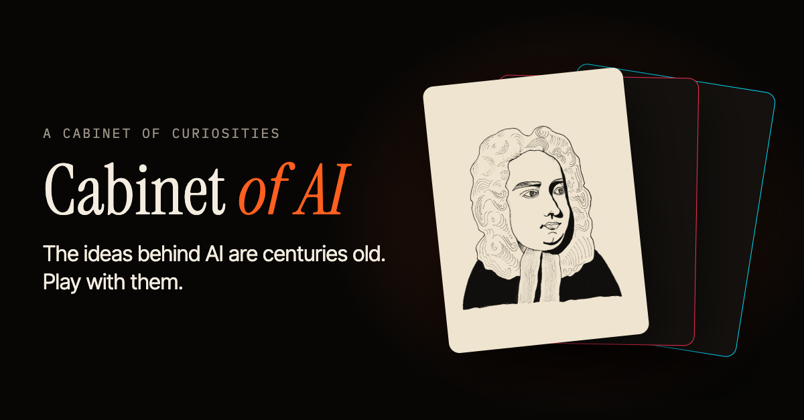

The author
A machine that writes books, imagined in 1726. I rebuilt it. Go turn its cranks.
The Lagado Engine · Cabinet of AI
cabinet-of-ai-gx8a.vercel.app
A machine that writes books, imagined in 1726. I rebuilt it. Go turn its cranks.
A cabinet of curiosities for the ideas behind AI.
